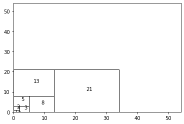
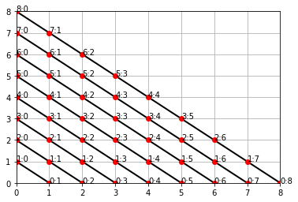

fibnocci
0 Fibonacci定义
> $ f(n+1)=f(n)+f(n-1),\space n >= 1$
1. $\sum(f(n)^2) = f(n)\cdot f(n+1)$
面积之和相等:

证明aka.绘图代码如下
import matplotlib.pyplot as plt
from matplotlib.path import Path
import matplotlib.patches as patches
import numpy as np
def fib(max):
a, b = 1, 1;
while a < max:
yield a;
a, b = b, a + b;
verts = [
]
codes = [
# Path.MOVETO,
# Path.LINETO,
# Path.MOVETO,
# Path.LINETO,
# Path.CLOSEPOLY,
]
fig = plt.figure()
ax = fig.add_subplot(111)
max = 30
prev = 1;
sum = 1;
for i, n in enumerate(fib(max)):
if (i == 0):
continue
if (i % 2):
rc = plt.Rectangle((prev, 0), n, n)
else:
rc = plt.Rectangle((0, prev), n, n)
prev = n
sum += n
rc.set_fill(False) # rectangle , edge size is n = fib(i)
ax.add_patch(rc)
ax.set_xlim(0, sum)
ax.set_ylim(0, sum)
c_x = rc.get_x() + rc.get_width() / 2 # center .x
c_y = rc.get_y() + rc.get_height() / 2 # center .y
ax.text(c_x, c_y, str(n), fontsize = 10)
plt.show()
无穷可数数列（有理分数&双射函数f(N*N)->N 
max = 8
for k in range(1, max + 1):
verts.append((0, k))
codes.append(Path.MOVETO)
verts.append((k, 0))
codes.append(Path.LINETO)
for i in range(0, 2*k + 2):
x = k - i
y = i
plt.plot([x], [y], 'ro')
ax.text(x, y, str(y) + ':' + str(x), fontsize = 10)
path = Path(verts, codes)
ax.grid()
patch = patches.PathPatch(path, facecolor='orange', lw=2)
ax.add_patch(patch)
ax.set_xlim(0, max)
ax.set_ylim(0, max)
2. $f(n)^2+f(n-1)^2 = f(2*n+2)$
归纳法证明如下： n=1，2 上述等式成立，假设对于n-1,n上式成立: $$ f(2n) = f(n)^2 + f(n-1)^2 \qquad\qquad(1) \\ f(2n+2) = f(n + 1)^2 + f(n)^2 \qquad\qquad (2)\ $$
下面推导n+1的情况 由假设得(2)-(1)： $$\begin{align} f(2\cdot n+1) &= f(n+1)^2-f(n-1)^2 \qquad \qquad (3) \end{align}$$
then:
$$\begin{align} f(2\cdot n+3) &= f(2n+1)+f(2n+2)\\ &= 2f(2n+1) + f(2n)\\ &= 2[f(n + 1)^2 - f(n-1)^2] + f(n)^2 + f(n-1)^2\\ &= 2[[f(n + 1) + f(n-1)] \cdot [f(n + 1) - f(n-1)]] + f(n)^2 + f(n-1)^2\\ & = 2f(n)[f(n + 1) + f(n-1)] + f(n)^2 + f(n-1)^2\\ & = 2f(n)f(n + 1) + [f(n) + f(n-1)] ^ 2 \\ & = 2f(n)f(n + 1) + f(n+1)^2 + f(n) ^2 - f(n) ^2\\ & = [f(n) + f(n + 1)] ^2 - f(n) ^2\\ & = f(n+2)^2 - f(n)^2\\ \end{align}$$
then:
$$\begin{align} f(2\cdot n+4) &= f(2\cdot n +3) + f(2n+2)\\ &= f(n+2)^2 - f(n)^2 + f(n + 1)^2 + f(n)^2\\ &= f(n + 1)^2 + f(n+2)^2 \end{align}$$ 因此对于n + 1，结论成立 【Q.E.D】
3. $f(n)\cdot[f(n-1)+f(n+1)] = f(2\cdot n+1)$
性质2证明已经包含。
4. 黄金分割性质
数列$\frac{f(n+1)}{f(n)}$ 收敛，且趋于一个值1.618($\dfrac{[1+\sqrt(5)]} {2}$)
$$ 假设收敛，即对于足够大的n有：\\ k=\frac{f(n)}{f(n+1)}=\frac{f(n+1)}{f(n+2)}\\ let\space a = f(n), b=f(n+1)\Rightarrow b = k\cdot a;\\ \frac{f(n)}{f(n+1)}=\frac{f(n+1)}{f(n+2)}\\ \frac{a}{b} = \frac{b}{a+b}\\ \frac{1}{k} = \frac{k}{1+k}\\ 1+k=k^2\\ 解得：k = \dfrac{[1+\sqrt(5)]} {2}\\ 显然另外一个解\dfrac{[1-\sqrt(5)]} {2}为负值,不适合。\\ $$